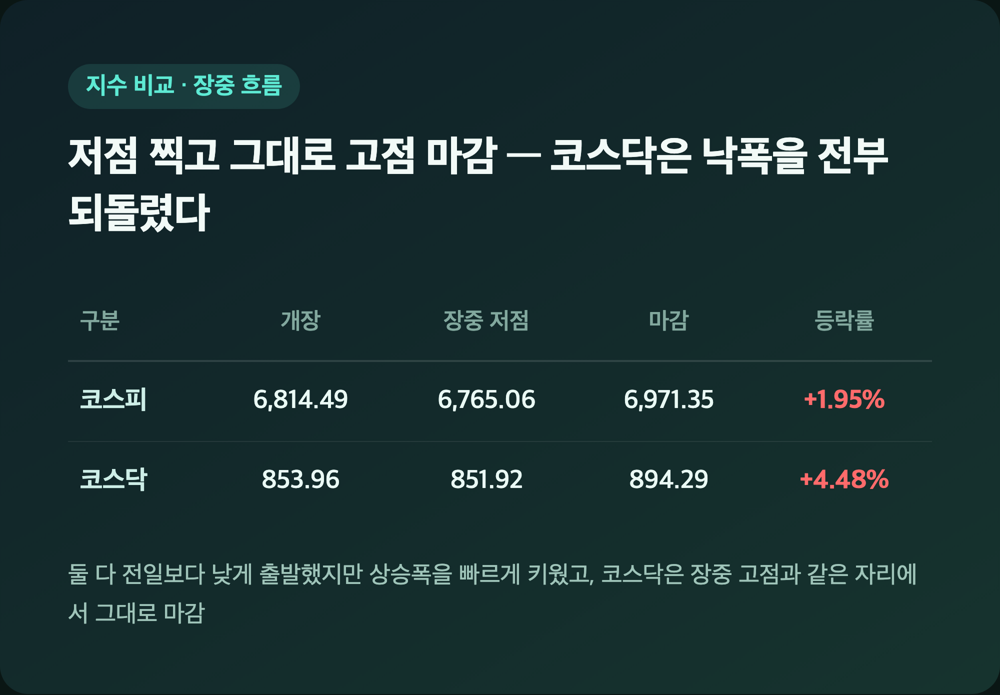
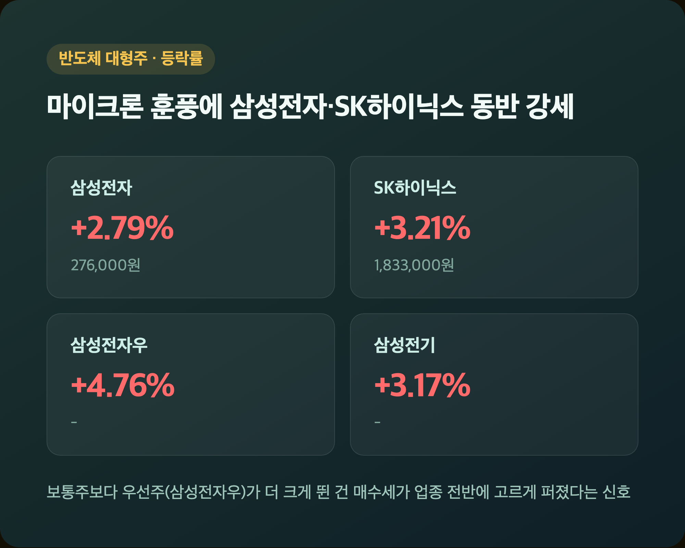
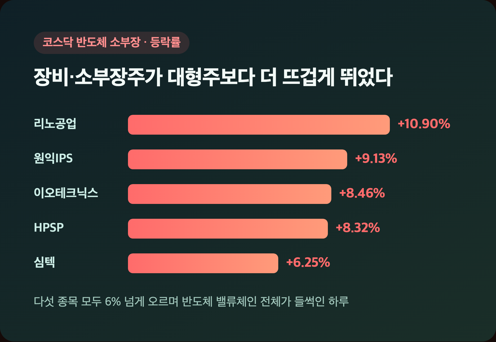
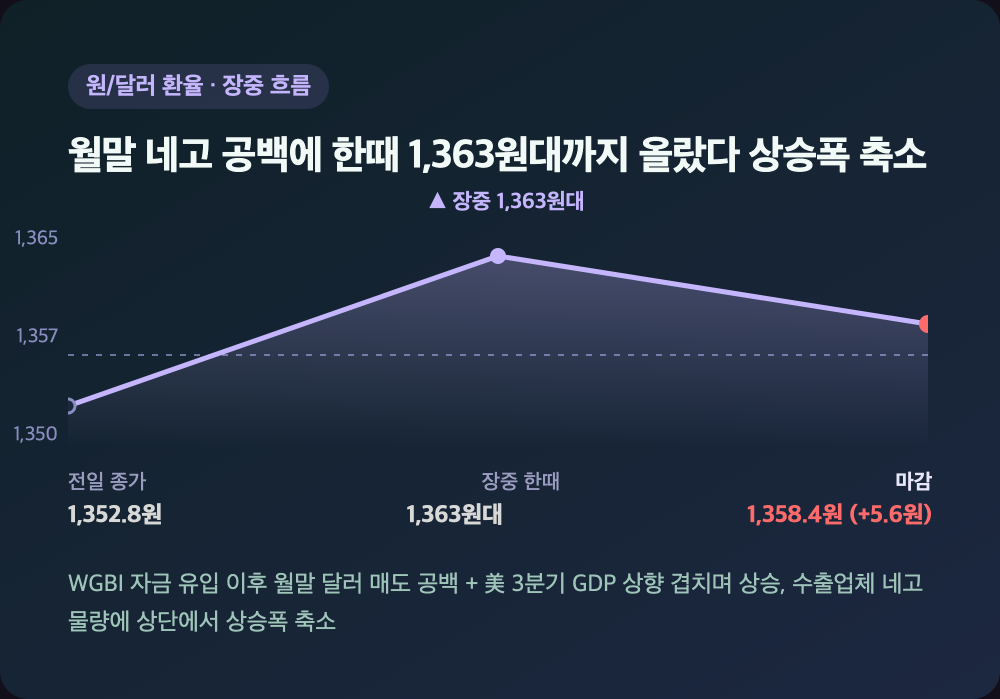
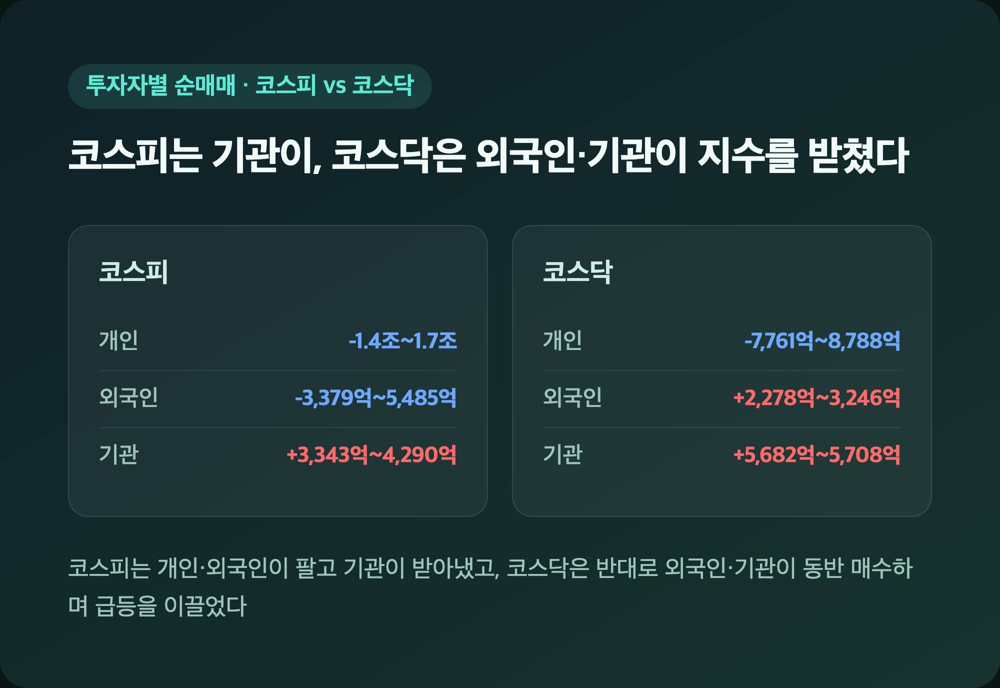

어젯밤 자기 전에 마이크론 실적 발표 기다리면서 "이거 잘 나오면 내일 반도체주 들썩이지 않을까" 생각했는데요, 진짜 그대로 됐습니다. 코스피는 사흘 내리 빠지다가 나흘 만에 웃었고, 코스닥은 아예 4%대 급등을 찍었어요. 그것도 그냥 오른 게 아니라 장중 한번 크게 흔들렸다가 반등한 날이라, 순서대로 풀어볼게요.
🇰🇷 코스피 6,971.35·코스닥 894.29 마감 – 사흘 내리 빠지다 나흘 만에 반등
|
코스피 6,971.35 (+133.31, +1.95%) / 코스닥 894.29 (+38.38, +4.48%) |

| 구분 | 개장 | 장중 저점 | 마감 | 등락률 |
| 코스피 | 6,814.49 | 6,765.06 | 6,971.35 | +1.95% |
| 코스닥 | 853.96 | 851.92 | 894.29 | +4.48% |
둘 다 장 초반엔 전일보다 낮게 출발해서 저는 "어, 오늘도 또 밀리나" 싶었는데요, 그 뒤로 상승폭을 빠르게 키우더니 코스닥은 아예 장중 고점과 같은 자리에서 마감했습니다. 코스피는 7,000선 턱밑, 코스닥은 900선 목전까지 붙은 걸 보니 오랜만에 숫자 보는 맛이 났어요. 9/28부터 사흘 연속 하락했던 코스피 입장에선 나흘 만의 반등이라 더 반가운 하루였습니다.
💾 삼성전자 +2.79%·SK하이닉스 +3.21% – 마이크론이 쏘아올린 반도체 랠리
|
삼성전자 276,000원 (+2.79%) / SK하이닉스 1,833,000원 (+3.21%) |

| 종목 | 등락률 | 마감가 |
| 삼성전자 | +2.79% | 276,000원 |
| 삼성전자우 | +4.76% | - |
| SK하이닉스 | +3.21% | 1,833,000원 |
| 삼성전기 | +3.17% | - |
25주 들고 있는 삼성전자가 오늘 +2.79% 오른 걸 보고 "오, 오랜만에 기분 좋네" 했습니다. 어젯밤 미국 마이크론이 시장 전망치를 웃도는 실적에 더해 2027회계연도 1분기 매출 전망(615억달러±15억달러)까지 상향 제시하면서 공급계약 확대·설비투자 계획을 키운 게 직접적인 트리거였어요. 보통주보다 우선주인 삼성전자우가 더 크게 뛴 것도 눈에 띄었는데, 반도체 업종 전반에 매수세가 그만큼 고르게 퍼졌다는 신호로 보였습니다.
🚀 코스닥 반도체 소부장 급등 – 리노공업 +10.90%, 두 자릿수 상승 속출
|
리노공업 +10.90% / 원익IPS +9.13% / 이오테크닉스 +8.46% |

| 종목 | 등락률 |
| 리노공업 | +10.90% |
| 원익IPS | +9.13% |
| 이오테크닉스 | +8.46% |
| HPSP | +8.32% |
| 심텍 | +6.25% |
코스닥 쪽은 대형주보다 오히려 반도체 장비·소부장주가 더 화끈하게 움직였어요. 리노공업이 두 자릿수 상승을 찍은 걸 비롯해 다섯 종목이 전부 6% 넘게 오른 걸 보니 "오늘은 아예 반도체 밸류체인 전체가 들썩였구나" 싶더라고요. 바이오와 이차전지주까지 가세하면서 코스닥이 코스피보다 더 센 상승폭을 낸 건데, 신한투자증권 쪽에서도 마이크론의 설비투자 가이던스 상향이 소부장 강세의 직접적인 불씨였다고 짚었습니다.
📈 왜 이렇게 올랐나 – 반도체 수출 역대 최대·美 물가 둔화 겹쳤다
|
9월 반도체 수출 603억달러 (전년 동월 대비 +262.8%, 역대 최대) / 수출 총액 사상 첫 1,200억달러 돌파 |
| 배경 | 내용 |
| 마이크론 실적 | 전망치 상회 + 2027회계연도 1분기 매출 가이던스 상향 |
| 9월 수출 | 사상 첫 1,200억달러 돌파, 반도체 수출 603억달러로 역대 최대 |
| 美 PCE 물가 | 전날(9/30) 발표치가 시장 예상치 하회, 연준 긴축 우려 완화 |
대신증권 이경민 연구원은 "미국 국채 금리 부담이 눈에 띄게 완화됐다"고 평가했는데요, 숫자만 봐도 국내 반도체 수출이 역대 최대치를 찍었으니 오늘 반도체주 랠리가 단순히 심리적인 호재만은 아니었다는 생각이 들었습니다. 다만 어젯밤 뉴욕증시는 다우 -0.86%·나스닥 +0.24%로 엇갈렸고 미국 10년물 금리도 5.3%대를 유지했다고 하니, 금리 변수 자체가 완전히 해소된 건 아니라는 점은 계속 챙겨봐야 할 것 같아요.
💱 원/달러 1,358.4원 – 월말 네고 공백에 달러 강세 겹쳤다
|
원/달러 환율 1,358.4원 (+5.6원) |

| 상승 배경 | 내용 |
| 월말 달러 매도 공백 | WGBI 편입 관련 자금 집중 유입 이후 공백 발생 |
| 미국 3분기 GDP 상향 | 연율 2.2%로 수정, 10년물 금리 5.307%(2007년 이후 최고) |
| 외국인 순매도 | 코스피 외국인 매도에 따른 달러 수요 증가 |
| 엔화 약세 | 달러/엔 158엔대 진입 |
환율은 장중 한때 1,363원대까지 올랐다가 상승폭을 줄이며 마감했어요. 저는 이걸 보면서 "주식은 오르는데 환율도 같이 오르네" 싶었는데, 수출업체 네고 물량이 상단에서 유입될 수 있어 추가 상승은 제한적일 거라는 전망도 같이 나왔습니다.
💰 수급 동향 – 코스피는 기관이, 코스닥은 외국인·기관이 받쳤다
|
코스피: 기관 +3,343억~4,290억원 순매수 / 코스닥: 외국인·기관 합산 약 8천억~9천억원 순매수 |

| 투자자 | 코스피 순매매 | 코스닥 순매매 |
| 개인 | -1조 4,306억~1조 7,331억원 | -7,761억~8,788억원 |
| 외국인 | -3,379억~5,485억원 | +2,278억~3,246억원 |
| 기관 | +3,343억~4,290억원 | +5,682억~5,708억원 |
코스피 수급 수치는 소스마다(핀포인트·파이낸셜뉴스 vs 이데일리) 집계 시점 차이로 추정되는 소폭 격차가 있었는데, 방향성은 모든 기사가 똑같았어요 — 개인·외국인이 팔고 기관이 받아내며 지수를 밀어올렸다는 점이요. 코스닥은 반대로 외국인과 기관이 동반 순매수하며 급등을 이끌고 개인만 순매도로 대응했는데, "오늘은 대형주와 소형주 주체가 이렇게 다르게 움직였구나" 싶었습니다.
마무리하며
오늘 코스피는 +1.95%(6,971.35), 코스닥은 +4.48%(894.29)로 둘 다 크게 웃었어요. 마이크론 실적과 역대 최대 반도체 수출이 겹치면서 대형주부터 코스닥 소부장까지 반도체 밸류체인 전체가 들썩인 하루였습니다.
솔직히 요 며칠 코스피가 지지부진했던 터라 반등 폭이 이 정도일 줄은 몰랐는데요, 25주 들고 있는 삼성전자도 오랜만에 웃어줘서 저는 일단 내일 장도 기대하면서 지켜보려고요. 다만 미국 금리가 아직 5%대 중반이라는 거, 잊지 않고 있습니다.
오늘은 모처럼 웃었지만, 내일은 또 어떻게 될지 아무도 모르죠. 일단 오늘 하루는 기분 좋게 마무리하겠습니다 🌱